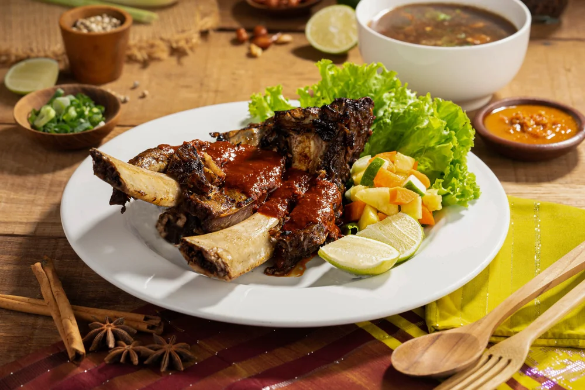
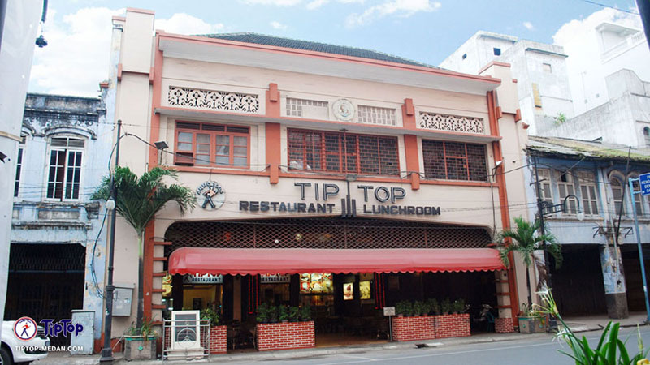

Kuliner Tradisional
Indonesia
1. Rendang Minangkabau — Padang, Sumatera Barat

Rendang merupakan hidangan khas masyarakat Minangkabau yang terkenal dengan cita rasa kaya rempah. Daging dimasak bersama bumbu dan santan melalui proses yang membutuhkan waktu sehingga menghasilkan rasa yang kuat dan tekstur yang khas.
Bagi wisatawan, mencicipi rendang bukan hanya tentang makanan, tetapi juga tentang mengenal kekayaan rempah dan tradisi kuliner masyarakat Minangkabau.
2. Konro Karebosi - Sulawesi Selatan

Makassar adalah kota yang terkenal dengan masakan berdaging berat yang penuh bumbu. Di sana, Konro Karebosi menjadi ikon kuliner tradisional yang paling terkenal. Restoran ini menyajikan iga sapi raksasa pilihan, yang dimasak dalam kuah sup kaya rempah atau dibakar dengan baluran saus kacang khas.
Bagi wisatawan, mencicipi Sup Konro maupun Konro Bakar bukan hanya sekadar menikmati makanan lezat. Masakan ini merefleksikan cita rasa kuliner Sulawesi Selatan yang berani, kuat, dan memakai teknik memasak tradisional yang diwariskan turun‑temurun untuk menjaga kelembutan tekstur daging.
3. Tip Top Restaurant - Sumatera Utara

Berdiri di kawasan bersejarah Kesawan, Tip Top Restaurant membawa pengunjung menelusuri mesin waktu menuju era kolonial di Kota Medan. Bangunan dengan arsitektur klasik Eropa ini telah menjadi saksi bisu perkembangan kota dan pusat bertemunya berbagai kebudayaan sejak awal abad ke-20.
Daya tarik utama restoran legendaris ini terletak pada konsistensinya dalam menjaga warisan resep otentik serta nuansa interior masa lalu yang penuh memori sejarah. Menikmati hidangan di sini memberikan pengalaman berbeda bagi wisatawan yang ingin mengenal sejarah perkembangan kuliner dan gaya hidup masyarakat Deli pada masa lampau secara visual maupun rasa.